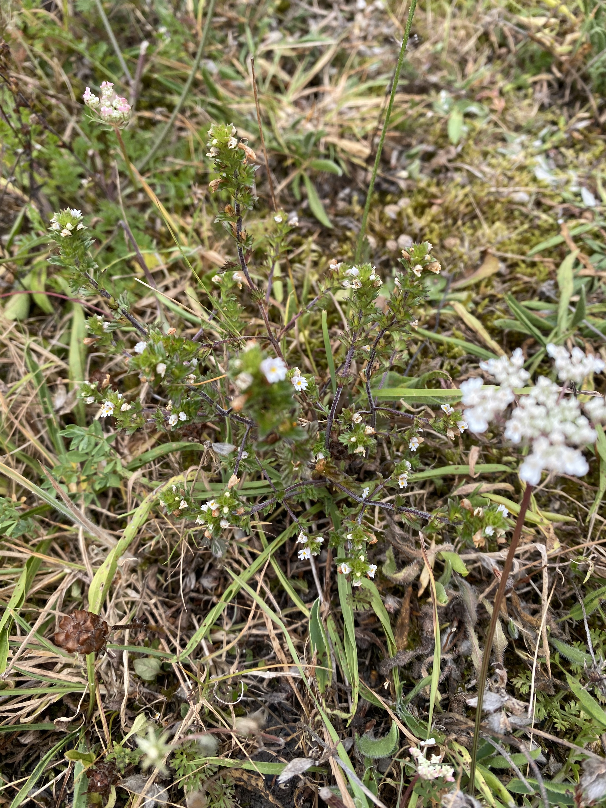
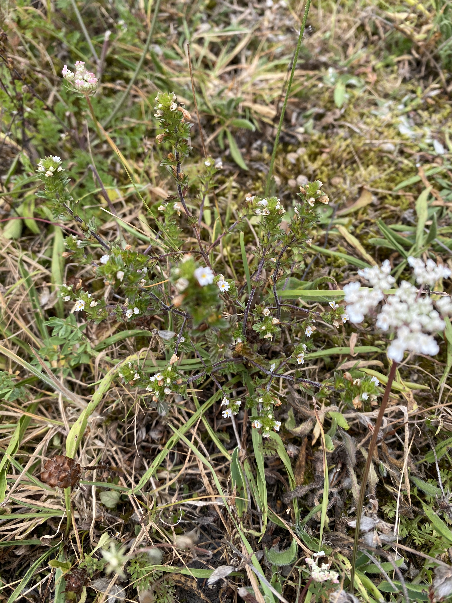
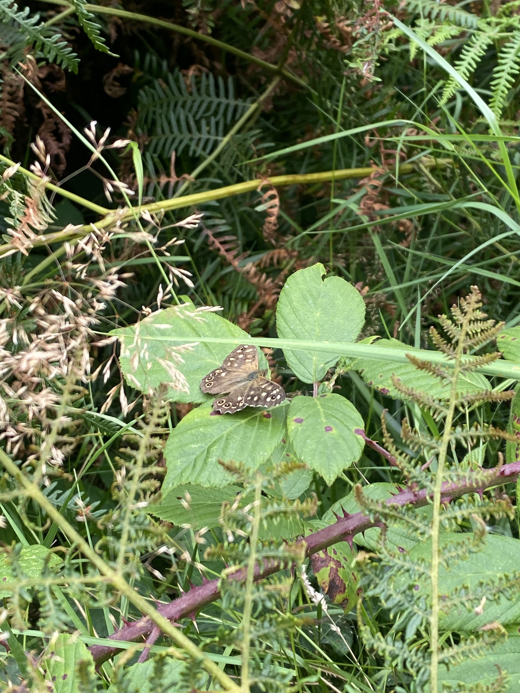
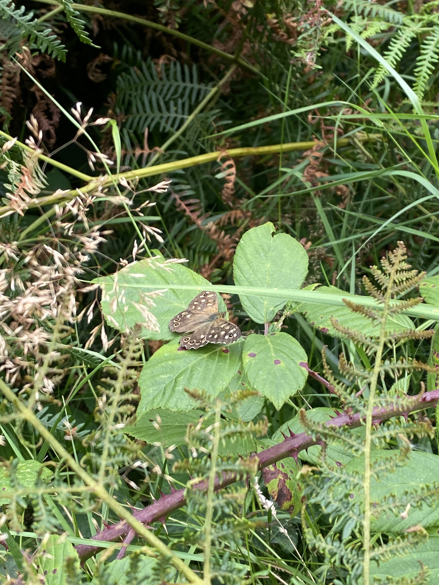

The Senedd has passed legislation to deal with coal tips in Wales. On 15 July 2025, Members approved the Disused Mines and Quarry Tips (Wales) Bill, establishing a new coal tip authority, responsible for inspecting and monitoring the more than 2500 coal tips across Wales. The authority, due to be formally established in April 2027, will take over responsibility for inspections and monitoring. For now, safety work continues under a patchwork of arrangements. Currently, responsibility for coal tips is shared between a number of different organisations. The Coal Tip Safety Taskforce, created by the UK and Welsh governments after the 2020 Tylorstown landslide coordinates the identification and assessment of disused coal tips. Tylorstown landslide site in Rhondda Cyon Taf. Credit: National Police Air Service Colin Chapman is a geospatial manager who helps maintain the national database of coal tips. He explains “until the new body comes online and produces their own inspection monitoring regime, there’s an interim regime, which is run by Welsh Government.” “It works as a constant feedback loop. The Mining Remediation Authority produces inspection reports, which are collated and sent out to local authorities.” At present, it falls on councils to act on findings, although their powers of intervention are limited. Approaches wary widely: Rhondda Cynon Taf has a dedicated team for coal tips while other councils make coal tip safety a department’s responsibility. In Monmouthshire, an Assistant Engineer from the Flood Risk Management Team carries out coal tip safety work. Natural Resources Wales (NRW) can also provide assistance during risk assessments and safety work. Responsibility is further complicated by a variety of ownership patterns; 30% of coal tips are publicly owned, 42% are privately owned, 20% are owned by businesses and 8% have either have no clear majority ownership or are unregistered. Approximately 50% of disused coal tips have more than one owner, with a number of tips also sitting across more than one local authority. Private landowners remain legally responsible for the safety of tips on their property. Under the new law however, the Disused Tip Authority will be able to order safety work, and step in directly if owners fail to act, billing them for completed works afterwards. While the power to compel action is welcomed by some, campaigners warn this could have unintended consequences. Daniel Therkelsen, a campaign manager and director at Coal Action Network, fears that the bill lowers the threshold of when landowners need to act, in a way that could encourage re-mining. “We suspected that these measures, which are expensive, are likely to make landowners more amenable to companies coming up and saying. Look don’t worry about the costs, we’ll mine these coal tips, and then we’ll remediate them afterwards, at no cost to you.” While new legislation at Westminster seeks to ban all coal licenses, mining coal tips doesn’t require a license. This means that “shortly after the bill is passed, coal tips will be the only place in the UK that you can legally mine coal.” Therkelsen said, “we’re afraid that this will turbo-charge the industry behind mining coal tips.” Therkelsen disagrees with that the idea that sometimes the only way to secure coal tips is to allow remining; which he calls a “false dichotomy”. “There is money to remediate coal tips, and money should come from Westminster, reflecting the historical responsibility that Westminster and England have to those [Welsh] coal tips. They benefited from the coal now they need to clean up their mess -- and they have the money to do it.” The cost of managing coal tips in Wales is estimated at around £600 million. Funding currently comes from a mix of local authority budgets, ad hoc government grants, and project specific support. As part of the Coal Tip Safety Grant Scheme in March 2025, the Welsh Government allocated £34 million to 10 local authorities and NRW. The UK Government provided a further £25 million towards management in the 2025 Autumn budget. However, Huw Irranca-Davies, Deputy First Minister and Cabinet Secretary for Climate Change and Rural Affairs said the limiting factor was not money, but a lack of staff. Similarly, evidence heard in the UK parliament in June heard that money alone doesn’t guarantee a robust monitoring regime, and that it is a shortage of workers is preventing Welsh councils from keeping coal tips safe. Nicola Pearce from Neath Port Talbot Council told the Welsh Affairs Committee, “We just cannot get the staff to undertake the work on behalf of the local authority”. She explained that “they are either not willing to work for a local authority or there are no staff available in this geographical area.” Local authorities are the main organisations responsible for carrying out work on coal tips, the leftover waste from coal mining. In Caerphilly, Jim Davies Civil Engineering has recently been appointed for five years to carry out work. This includes vegetation clearance to support inspections, slope reprofiling to improve stability and drainage, and the installation of material to prevent erosion and encourage vegetation growth. The Council said the appointment has “helped support local jobs, by keeping skilled workers in the area, and providing training in specialist areas like coal tip maintenance and drainage. This type of contact provides steady work, which allows contractors to invest in local people and training.” However, councils continue to acknowledge the difficulties of finding contractors with the necessary expertise, with Caerphilly Council’s Mark Williams saying that there were “not many of them on the market.” This scarcity is closely tied to the decline of the coal industry. As coal mining has largely stopped across Wales, the pool of engineers, hydrologists, and other specialists is increasingly small. Nicola Pearce said: “There are no training programmes to deal with the legacy of coal mining, apart from general engineering courses.” The Committee did note that measures were being put in place by the Welsh Government to address the skills shortage. One initiative involves Talent Beyond Borders, an organisation which matches skilled refugees with employers. Rabia Ceylan, a programme manager at Talent Beyond Borders, said the organisation was in the early stages of working with the Welsh government to work out how to fill the skills gap. The Welsh Government would then act as an intermediary to introduce the organisation to relevant private sector employers. A similar scheme, Wales Asylum Seeker and Refugee Doctors (WARD), has seen 360 doctors and dentists placed in jobs across Wales. Regarding the coal tip safety programme, Ceylan said that no candidates have arrived in Wales, noting the process often takes a few years. In the 2022 White Paper consultation, Dr Bruce Hurrell and Professor Duncan Pirrie at the University of South Wales noted that the university is “well placed” to contribute to rectifying the skills gap in coal tip safety. Founded in 1913 as the South Wales and Monmouthshire School of Mines, the University of South Wales originally trained engineers and electricians for the coal industry. Today, it offers training in geoscience, surveying, earth science and civil engineering. It also has expertise in Geographic Information System (GIS) and operates a drone mapping and 3D visualisation team who carried out the initial assessment at the site of the Tylorstown landslide in 2020. Coal tip safety is a reminder of how the heavy industry which dominated the south Wales valleys continues to shape the present. But conservationists argue that these sites also tell a story of natural resilience and success stories regarding the biodiversity they support. Coal tips are made up of coal dust, shale and ironstone. This means that the surface soils on coal tips surface soil are strikingly nutrient poor – creating conditions where usually dominant plants such as bramble, bracken and grasses struggle to establish. Instead, a much wider range of plants species and the wildlife they support can coexist. Liam Olds, an entomologist and founder of the Colliery Spoils Biodiversity Initiative said, “nothing gets outcompeted; everything can live in harmony”. Many coal tips support what is known as “open mosaic habitats”, a recognised priority habitat in Wales. These are habitats which exist on land which has previous been developed and includes a mix of unvegetated or sparsely covered surfaces mixed with areas of more dense vegetation. Such variation over a small area creates opportunities for a variety of different wildlife. Bare earth, often dismissed as “wasteland” is important for things like ground nesting bees and wasps, hunting areas for tiger beetles and other nocturnal insects, basking areas for reptiles and adders. “In terms of what they deliver for nature conservation” Olds says, “it’s really big.” Something Olds is keen to emphasise is that every tip is unique. Their offerings depend on factors such as age, geology and the way they have been managed, or neglected, since mining ceased. Some have a conical or ‘pyramid’ shape, while others are flatter with material deposited more evenly. Gelli Tips, located in Rhondda Cyon Taff “almost has a series of fingers and a really complicated shape”, a result of how extracted material was positioned on the hillside. The way extracted material was dumped also affects the pH of the environment, meaning that within a tip you can find both acidic and alkaline soils next to each other. Calcareous habitats are rare to find inland in the South Wales Valleys, which often have acidic soils. One of these calcareous habitats is tufa springs, forming when calcium rich water seeps from the soil and deposits rocks made of calcium carbonate. This creates damp, alkaline conditions that allow specialist mosses to thrive, producing food and habitats for solider flies. As Olds warns, a lack of understanding means that rare habitats such as tufa springs may disappear before their importance is recognised. “it’s a little habitat that gets missed quite easily- one of the issues is that if tips are going to be managed in a certain way is the habitat going to get lost really easily because people don’t understand what tufa springs are”. “Even amongst ecologists a lot of them don’t understand brownfield sites very much.” Many tips lack protection that proponents of tip biodiversity would like to see implemented. While some tips fall within Sites of Special Scientific Interest, this is often incidentally because they overlap with already protected land. Some are recognised at a lower level as SINCs, or Sites of Importance for Nature Conservation, which carries limited wait in planning decisions. Olds is campaigning for more sites to be designated as Local Nature Reserves, giving them statutory protection and recognition from Welsh government. Olds “Meant to be a habitat ministers try to protect but the trouble is its probably one of those habitats which gets less protection than other priority landscapes- such as woodland and healthland. However, because their manmade, people just don’t value them, and there’s a lot of pressure to redevelop them.” Coal tips remain a deeply emotive topic in Wales. For many they are inseparable from the memory of the 1966 Aberfan disaster. As one resident from south Wales said, “you can’t talk about slag heaps without talking about Aberfan”. Olds acknowledges that coal tips have a reputational problem. “There is controversy about them, because you do have tips which are unstable, and people think of tips and think of Aberfan. We’ve been trying to change that perception a little bit even though it’s always going to be there.” Through the Coal Spoil Connections programme, run with Natural Resources Wales and local communities, Olds and other conservationists are trying to change perspectives by involving citizens. “Our work is trying to educate people about these sites and what’s special about them”. “they’ve got a lot going for them- got to make people aware of that and make them think differently, you can come to these places, they’re not very dangerous, pretty beautiful and quite safe a lot of the time.” Olds says the initiative has received a “very positive response”. He noted that it can be difficult to get funding, because potential funders have never really understood and valued these sites, although this is slowly starting to change. It is because of a lack of understanding, that Olds believes the best strategies for managing coal tips are not always implemented. Examples of these interventionist approaches is the promotion of tree planting or adding topsoil to tips. The addition of nutrient-rich soils erases the low-nutrient conditions that are so important for coal tip biodiversity, allowing dominant plants to overwhelm rarer species. Olds says “with tree planting schemes what tends to happen is that they plant them incredibly close together in rows so the trees become very dense and unhealthy. Theres also the issue of using trees which are not local and can bring diseases.” “I think sometimes they want to do tree planting because they think it will stabile the soil and make the tips more stable, in doing so helping with public safety concerns. I’m a little bit sceptical of whether that really works and whether there is science behind it.” Olds argues for a different approach: “If you want trees to establish it should be through natural means. Nature is far better at recovering land than we ever are. Allowing natural succession creates healthier, more diverse woodlands over time, without destroying the habitats that already exist.”


 


 

About this piece
This project was created as part of an MSc in Computational and Data Journalism at Cardiff University's school of Journalism, Media and Culture.
It uses d3 and scrollama to introduce the topic of coal tips. It then draws on interviews with various individuals and organsiations, FOIs, EIRs, and various other sources to explore themes related to new legislation, the skills gap in coal tip management, and the nature and biodiversity value of coal tips.
You can access the code for this project here.
Feel free to contact me here if you have questions about the project.